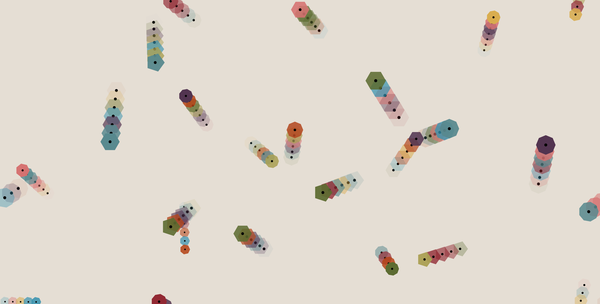

In meinen generativen Arbeiten nutze ich p5.js, um visuelle Systeme zu entwickeln, die sich durch Regeln, Bewegung und Zufall selbst erzeugen. Dieses Projekt zeigt eine Reihe generierter Kreisformen, die durch zufällige Variationen verzerrt und in mehreren Ebenen überlagert werdem. Kleine Rotationen und Verschiebungen erzeugen dabei Tiefe und Unregelmäßigkeit.


Weitere Projekte kombinieren autonome Bewegungssysteme mit generativem Zeichnen. Partikel bewegen sich durch den Raum und hinterlassen dabei Spuren oder formen visuelle „Abdrücke“, die sich mit der Zeit überlagern und wieder verschwinden. So entstehen organische, sich ständig wandelnde Kompositionen zwischen Struktur und Zufall, die an natürliche Prozesse oder flüchtige Erinnerungen erinnern.

Ein größeres Projekt war ein digitales Bleigießen.